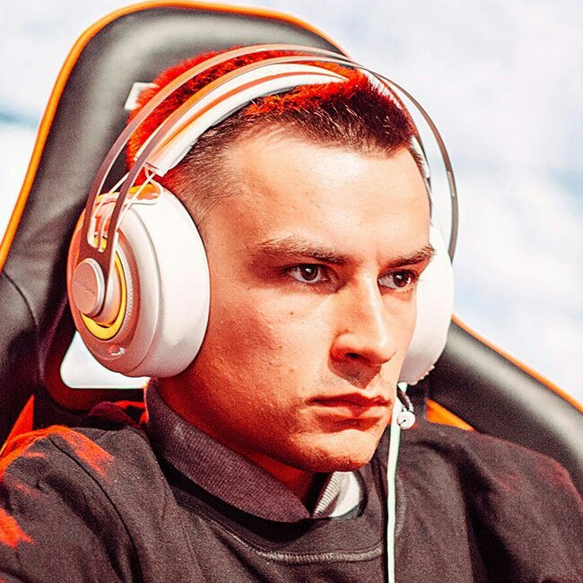

Game QA · Mobile QA · Client-Server · Test Automation
Андрей Ширявский
QA Engineer · Manual Testing & Automation
QA Engineer с опытом полного цикла тестирования игровых, мобильных, WebView и клиент-серверных систем: от анализа требований и API до регресса, релизной валидации и автоматизации.
Ключевые компетенции
- QA Engineer с 7+ годами опыта в IT, из них 5+ лет в Game QA: мобильные (Android, iOS) и клиентские игры в Wargaming, Game Insight, Playrix, My.Games;
- Покрываю полный цикл QA: анализ и уточнение требований, тест-дизайн, тест-планы, тест-кейсы и чек-листы, функциональное, интеграционное, исследовательское и регрессионное тестирование, валидация сборок и релизов;
- Тестировал Telegram Mini App на WebView, API, клиент-серверные игровые механики и интеграции игры с веб-сервисами; использую SQL, Unix/Linux, adb, logcat и CI-логи для анализа результатов и локализации дефектов;
- Совмещаю ручное тестирование и автоматизацию: web UI-автотесты на Playwright, мобильные UI-тесты на Python (Pytest, Appium, Airtest/Poco), сценарные тесты и Editor-валидаторы на C# (Unity Test Framework);
- Выстраиваю проверки до релиза: diff-валидаторы конфигураций, ассетов и локализации в CI (TeamCity, GitLab CI, Jenkins), прогоны на фермах устройств и участие в разработке Test Automation Agent;
- Руководил QA-командой (Game Insight): распределение задач, менторство, выстраивание процесса тестирования после реструктуризации.
Навыки
- Виды тестирования: ручное, функциональное, регрессионное, smoke, интеграционное, исследовательское, клиент-серверное, UI, сценарное, контентное, производительности, локализации и совместимости;
- Требования и тест-дизайн: анализ требований, классы эквивалентности, граничные значения, pairwise, state transition, risk-based testing;
- Тестовая документация: тест-планы, тест-кейсы, чек-листы, тестовые сценарии, детализированные воспроизводимые баг-репорты и отчёты о тестировании;
- Web и API: Telegram Mini Apps, WebView, тестирование API, клиент-серверное взаимодействие, интеграции игры с веб-сервисами, подготовка тестовых данных, SQL;
- Дефекты и диагностика: локализация дефектов, жизненный цикл бага, Jira, adb, logcat, логи и результаты CI-прогонов;
- Автоматизация: Playwright, Python, Pytest, Appium, Airtest, Poco, C#, Unity Test Framework, JUnit;
- Mobile: Android, iOS, adb, logcat, Xcode, AWS Device Farm, Firebase Test Lab, BrowserStack;
- GameDev: Unity, Unity Editor, LiveOps, IAP, аналитика (Amplitude, AppsFlyer, DevToDev);
- CI/CD и VCS: TeamCity, GitLab CI, Jenkins, Git, SVN;
- Тест-менеджмент: Jira, Confluence, TestRail, Qase;
- Прочее: SQL, Unix/Linux, Agile/Scrum;
- Команда: лидерство QA, менторство, улучшение процессов, кросс-командное взаимодействие.
Образование
- Инженер-системотехник — Белорусский государственный университет информатики и радиоэлектроники (БГУИР), 2021;
- Инженер-программист — Колледж бизнеса и права, 2016.
Сертификаты
- Automated testing in Python — TeachMeSkills, 2022;
- Intermediate English — Lingua, 2021;
- Quality Assurance Game — Wargaming, 2020;
- Training Software Testing — Учебный центр «Белхард», 2016.
Языки
- Русский — родной;
- English — Intermediate (B1–B2).
Опыт работы
QA Engineer
Duck My Duck | Грузия · Удаленно | 2026 — настоящее время
Обеспечение качества игрового проекта на этапах разработки и подготовки релизов, включая отдельную мобильную версию и Telegram Mini App на WebView. Функциональное, регрессионное и API-тестирование, развитие автоматизации.
Технологический стек: Telegram Mini Apps, WebView, API, Playwright, Android, iOS, Test Automation Agent.
- Участвовал в выпуске отдельной мобильной версии игры: проверял основные игровые сценарии и релизную готовность сборок для Android и iOS;
- Тестировал Telegram Mini App на WebView: функциональность клиентской части, интеграционные сценарии и API;
- Разрабатывал и поддерживал web UI-автотесты на Playwright;
- Участвовал в разработке Test Automation Agent — инструмента для автоматизации тестирования игровых сценариев, который снижает объём ручных проверок на регрессе;
- Развивал инструменты контроля качества, используемые командой в процессе разработки и подготовки релизов;
- Проводил функциональное и регрессионное тестирование игровых механик и пользовательских сценариев;
- Локализовывал дефекты и готовил воспроизводимые баг-репорты; сопровождал их с командой разработки до устранения и перепроверки.
QA Engineer
My.Games | Удаленно | 2024 — 2026
Обеспечение качества крупного игрового проекта на Unity (Android, iOS): автоматическая валидация игровых данных, сценарные тесты, валидация сборок и контроль качества контента.
Технологический стек: C#, Unity Test Framework, TeamCity, GitLab CI/CD, JUnit, AWS Device Farm, Firebase Test Lab, BrowserStack, Git.
- Разработал и поддерживал Editor-валидаторы конфигураций, ассетов, локализации и параметров персонажей — ошибки в игровых данных выявляются автоматически ещё до ручного тестирования;
- Создал diff-валидаторы для сравнения версий игровых данных: критические расхождения между версиями обнаруживаются на раннем этапе, а не на регрессе;
- Встроил тесты в CI/CD (TeamCity, GitLab) с JUnit/XML-отчётами, логами и скриншотами — результаты проверок доступны команде на каждой сборке;
- Настроил прогоны на фермах устройств (AWS Device Farm, Firebase Test Lab, BrowserStack) для Android и iOS;
- Писал сценарные тесты на C# (Unity Test Framework) для модификаторов, PvP-сценариев, фракционных бонусов, условий квестов и таблиц лидеров;
- Развивал тестовую инфраструктуру: рефакторил утилиты и расширял библиотеки для переиспользования в новых тестах;
- Валидировал игровые сборки и контент перед релизами, предотвращая попадание некорректных конфигураций в production;
- Менторил коллег по написанию валидаторов и сценарных тестов.
QA Engineer
Playrix | Удаленно | 2023 — 2024
Gardenscapes — мобильная игра жанра match-3 (Android, iOS). UI-автоматизация и регрессионное тестирование новых функций и режимов.
Технологический стек: Python, Pytest, Appium, Qase, TeamCity, Git, Android, iOS.
- Разрабатывал UI-автотесты на Python (Pytest, Appium) для новых функций и режимов игры на Android и iOS;
- Работал с инфраструктурой запуска и параллелизации тестов в CI (TeamCity);
- Участвовал в развитии тестового фреймворка проекта;
- Формировал отчёты по результатам прогонов в Qase и CI для команды разработки.
QA Lead
Game Insight | Удаленно | 2021 — 2023
Guns of Boom, Mystery Manor, The Tribez — мобильные игры (Android, iOS). Руководство QA-командой, тестирование новых функций и режимов, тестовая документация, мобильные фермы.
Технологический стек: Python, Pytest, Appium, Jira, Jenkins, Git, Unix, Android, iOS.
- Руководил QA-командой: координировал работу, распределял задачи и менторил коллег;
- После реструктуризации компании взял на себя ответственность за качество продукта: заново выстроил процесс тестирования и обеспечил стабильность релизов;
- Улучшал процессы QA и эффективность тестирования на нескольких проектах;
- Создавал и поддерживал тестовую документацию: тест-сьюты, тест-кейсы, чек-листы, инструкции по тестированию;
- Запускал тесты на мобильных фермах устройств, анализировал результаты и готовил отчёты.
QA Engineer
Wargaming | Минск, Беларусь | 2020 — 2021
World of Tanks — клиентская онлайн-игра (PC). Функциональное, интеграционное и контентное тестирование в QA-отделе из ~100 инженеров.
Технологический стек: Jira, Confluence, TestRail, Git, SVN, TeamCity, Python, Unix, SQL.
- Тестировал клиент-серверные игровые механики и внутриигровые интерфейсы;
- Проводил интеграционное тестирование между компонентами игры, игрой и веб-сервисами;
- Тестировал производительность клиента и аппаратную совместимость;
- Проводил контентное тестирование: модели и сцены, визуальные и звуковые эффекты, локализация;
- Разрабатывал и поддерживал тестовую документацию в TestRail: тест-сьюты, тест-кейсы, чек-листы, тест-планы;
- Обрабатывал результаты внутреннего и внешнего тестирования, заводил и отслеживал дефекты в Jira.